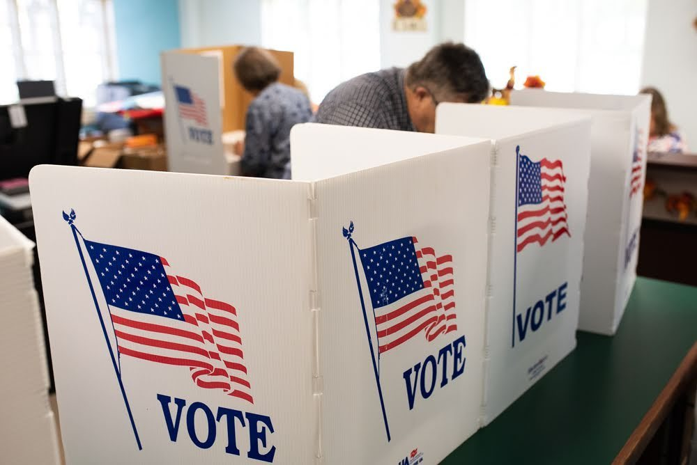
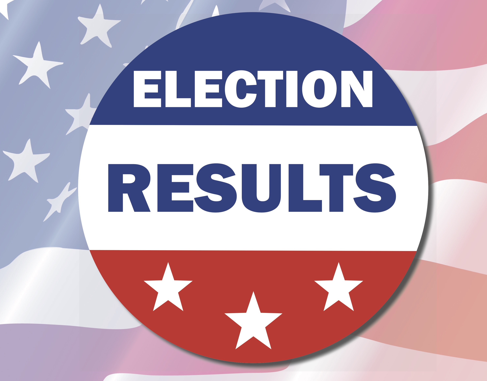

<mat-grid-list cols="3" rowHeight="3:2">
    <mat-grid-tile colspan="3" rowspan="1" >
<mat-card class="example-card">
    <mat-card-header>
      <mat-card-title>Election Authority</mat-card-title>
      <mat-card-subtitle>Secretary of State</mat-card-subtitle>
    </mat-card-header>
    
    <mat-card-content>
      <p>Election authorities setup the election; start the poll; 
        close the poll; announce the results. 
        Play the role of an election authority and setup a mock poll.</p>
    </mat-card-content>
    <mat-card-actions>
      <button mat-raised-button color="primary" (click)="manageElection()">Manage Election</button>
    </mat-card-actions>
  </mat-card>

  <mat-card class="example-card">
    <mat-card-header>
      <mat-card-title>Candidates</mat-card-title>
      <mat-card-subtitle>Presidential Candidates</mat-card-subtitle>
    </mat-card-header>
    
    <mat-card-content>
      <p>Candidates filing nominations to contest an election.
        Play the role of a presidential candidate and contest an election.
      </p>
    </mat-card-content>
    <mat-card-actions>
        <button mat-raised-button color="primary" (click)="manageCandidate()">Manage Candidates</button>
    </mat-card-actions>
  </mat-card>

  <mat-card class="example-card">
    <mat-card-header>
      <mat-card-title>Voters</mat-card-title>
      <mat-card-subtitle>Voters cast vote</mat-card-subtitle>
    </mat-card-header>
    
    <mat-card-content>
      <p>When the poll is open, voters cast their votes to their favorite candidates.
        Select a mock poll and cast your vote.
      </p>
    </mat-card-content>
    <mat-card-actions>
        <button mat-raised-button color="primary" (click)="manageVote()">My Vote</button>
    </mat-card-actions>
  </mat-card>
<!-- 
  <mat-card class="example-card">
    <mat-card-header>
      <mat-card-title>Election Results</mat-card-title>
      <mat-card-subtitle>Declaration of winner</mat-card-subtitle>
    </mat-card-header>
    
    <mat-card-content>
      <p>Once the poll is closed, the Election Authority announce the results.
        Setup a mock poll and announce the results</p>
    </mat-card-content>
    <mat-card-actions>
        <button mat-raised-button color="primary" (click)="manageResult()">Manage Results</button>
    </mat-card-actions>
  </mat-card>
  -->
</mat-grid-tile>
